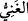
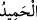
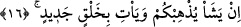

O’nun zâtına gece gündüz dört tekbir getirir.
“Zengin ve övülmeye lâyık olan ancak” ve yalnız “O’dur.”
Herkes O’na muhtaçtır. Zira hiç kimse işlerini yardımsız islah etmeye muktedir
olamaz. Nitekim emir ve sultan da hizmetçi ve yardımcıları olmadan imâret ve
yönetimini icraya muktedir değildir. Yine tâcir, tüccar, esnaf hepsi bir takım kiracılara
ve yardımcı elemanlara muhtaçtır. Tüm yardımcı ve diğer tâlî unsurlardan ganî ve
müstağni olan yalnız Allah Teâlâ’dır.
el-Es’iletü’l-müfhıme’de der ki, zengin ve müstağnî anlamına gelen “
” kelimesinin
mânâsı, Allah Teâlâ yaratıklardan ganîdir; yâni “onları yaratmayabilirdi” demektir.
Onların hayatını idâme ettirince onları mükellef kılsa da kılmasa da elbette imtihan
edecektir. Bütün yaratıklar, Allah nezdinde bir mesâbededir. Çünkü Allah Teâlâ
onlardan ganîdir. Mutezile bu görüşe karşı çıkar. Onlar, “Şayet Allah Teâlâ, kulları
marifet ve şükür ile mükellef kılmasaydı hakîm olamazdı”, derler. Bu tam bir zillet ve
rüsvaylıktır. Bu görüş kişiyi, “Allah Teâlâ’nın kulları kendine bir fayda sağlaması yahut
bir kötülüğü bertaraf etmesi için yaratmıştır,” diyen Mecûsîlerin sözüne götürür. Zira
onlar şöyle derler: “Allah Teâlâ melekleri şeytanın eziyetini kendi zâtından bertaraf
etmek için yaratmıştır.”
Allah Teâlâ zengin ve övülmeye layık olduğu için onlara olan genel nimeti ve herkesi
kapsayan fazlı üzerine onlar tarafından övülmeye hak kazanmıştır. Allah Teâlâ zengin ve
muhtaç olmaktan kurtaran (müğnî)dır. Kâşifî der ki: “Mümkün olan varlıkların mahiyeti
varlıkta fâile muhtaçtır. “Fakir olan sizlersiniz” anlamındaki “
” sözü buna
işârettir. Hak Teâlâ, kemâli sebebiyle âlem ve âlemdekilerin varlığından müstağnîdir.
“Zengin olan ancak O’dur” anlamındaki “
” sözü bundan dolayıdır. Esmânın
kemâlinin zuhûru mümkünâtın a’yânının zuhûruna bağlı olduğundan, büyük bir nimet
olan îcâdında hamd ve senâ gerekir. “Övülmeye lâyık olan” anlamındaki “
”
kelimesi de bunu îmâ etmektedir. Şu rubâîden de bunu anlamak mümkündür:
Kendi bütün sıfatlarıyla a’yân olunca,
Mümkün olanların ortaya çıkması vâcip oldu.
Değilse zâtının kemâli,
Kendisinin beyan ettiği gibi insanlardan “ferd”dir, “ganî”dir.
16. Allah dilerse sizi yok eder ve yerinize yeni bir halk getirir.
“Allah” sizi yaratıp yaşatmaya muktedir olduğu gibi “dilerse sizi yok eder ve